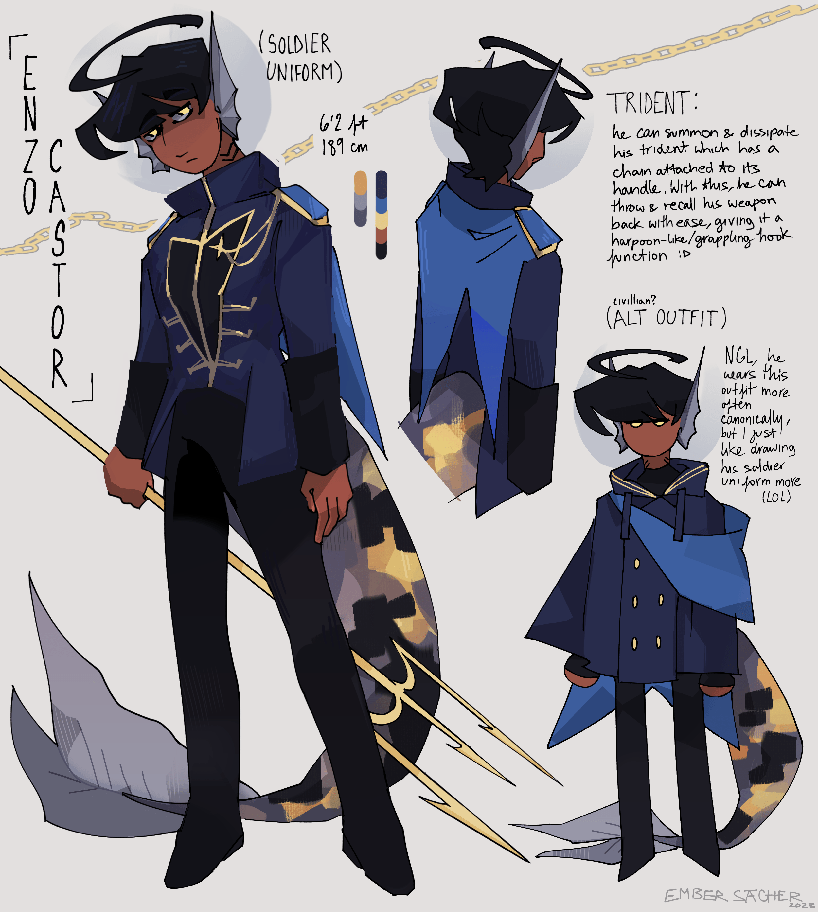

some PTC refs
creation date: may 16
giomi's reference sheet !
i originally made this one in mspaint before my laptop broke down, but i was ultimatly unhappy with it & decided to go over it in ibis. idk, i still think the original on the oc masterlist site has more charm, but this one is formatted better so i'm still gonna keep it, despite the fact i like the art less. this one's just one of them "it is what it is" moments.
also, keep in mind, these are not *all* of PTC's characters (not even all the main cast). these are just the ref sheets i've completed thus far.
archer's ref !

i decided to put archer and enzo's refs here too, also made in ibis. man i didnt know how tf to shade these things. i get that ur not rlly suppoused to shade reference sheets but they looked far too plain without it. i had so much trouble with these guhh,,, the time in total for all three was easily 40+ hours.
enzo's ref !
i almost didn't include his helmet in this, im still debating whether or not i wanna keep it or not. either that or i need to redesign the suit to work better with it ;o; because in certain angles, it is hell to figure out. whatevaaahhhhh whatevaaaa
